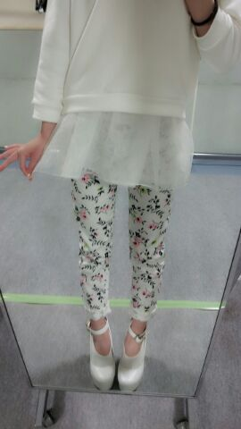

はあ〜い ♪
今日も１日おつかれさまです(〃ω〃)
ろってぃ−だよ .
ひめか♪17歳のお誕生日
おめでとう //
まひろとおんなーじっ (*´∨`*)
歳おそろっちん 笑
まひろも 後３ヶ月で18かぁ〜〜
今日は 個別握手会でした.
皆本当にありがとう(〃∨〃)
皆のことが大好きっ♪
お隣のレーンからも
可愛いよ 頑張ってね だとか
言ってくれる方がたくさんいて
すっっごく嬉しかったよ(〃∨〃)
ありがとう,心強かったです.
Rotty夢の皆さん!
今日もまた 元気,パワーを
もらい 皆さんのいい笑顔が
見れたーーー☆★☆わぁ〜い.
今日のRotty私服・・・☆きらん)))
爽やか〜ん ホワイト〜

メンバーに誉められて
嬉しかったよん(*^ω^*)
びよよよぉ〜〜ん. どうかな?
後ねっ )))) 報告.
やっとやっと 名曲コーナー
４つ撮ったうちの４つ目が
今日の『乃木どこ?』で流れる様です.
もう流れないんぢゃないか.と
不安になってたから
今日流れるって聞いた時は
本当嬉しかったなん(〃∨〃)
是非見てくだぱいっ (*´∨`*)
んでは まひろはお先に
お風呂いってっきまーーーす (^3^)/チュー☆
のし.